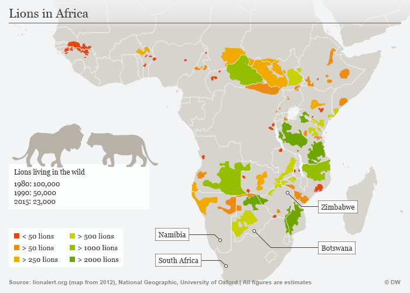

What is a lion's real name? Most people call a lion a lion. However, according to https://lionalert.org the scientific name for lions is panthrea leo. The lion does not have any interesting patterns however, male lions have a large mane that is typically a brown color. On the other hand, a female lion does not have a mane and are smaller in size. The average weight for an Adult Male Lion is: 420lbs www.pbs.org. The average weight for and Adult Female Lion is: 280 lbs www.pbs.org .

this photo is from here
According to https://cbs.umm.edu, “ Lions are highly territorial and occupy the same area for generations. Females actively defend their territories against other females,while resident males protect prides from rival coalitions. Territory size depends on prey abundance, as well as access to water and denning sites.”Lions live in “open plains to thick brush and dry thorn forest” and “mainly living in north south Africa.https://natioinalzoo.si.edu.

This photo is from here
Lions are the only cats that live in groups according to https://www.folly-farm.co.uk/zoo/meet-the-zoo-animals/african-lion/ Lions are carnivores On the lion diet, you will only eat meat from ruminant animals (e.g., cows, deer, moose, sheep), along with sand water. A later stage of the diet is the reintroduction phase which involves slowly re-adding foods, such as mackerel, honey, and parsnips https://www.everydayhealth.com. Elephants and rhinos are the animals most likely to kill lions. The humble porcupine is a threat to mighty lions. Crocodiles are the one animal who will attempt to prey on lions. https://www.quora.com Lions are carnivores On the lion diet, you will only eat meat from ruminant animals (e.g., cows, deer, moose, sheep), along with salt and water. A later stage of the diet is the reintroduction phase, which involves slowly re-adding foods, such as mackerel, honey, and parsnips https://www.everydayhealth.com Elephants and rhinos are the animals most likely to kill lions. The humble porcupine is a threat to mighty lions. Crocodiles are the one animal who will attempt to prey on lions. https://www.quora.com Lions primarily large animals that weigh from 100 to 1,000 pounds (45 to 453 kilograms), such as zebra and wildebeest. In times of shortage, they also catch and eat a variety of smaller animals, from rodents to reptiles. Lions also steal kills from hyenas, leopards other predators. https://nationalzoo.si.edu There are different adaptations to lions, including acute smell, night vision, strong hands, sharp claws, sharp jaws, rough tongue, and loose skin of the abdomen. These characteristics of adaptation assist lions to live in their environments. The lion is a carnivore animal. https://wwwvedantu.com

this image is from here
Here is a short video that shows you all of the great sounds that lions make
This second video gives interesting information about Lions
lions typically live areas such as lower/south africa, south asia, and many other places. As previously explained in the last section. Here is a diagrahmm that depicts the reigons in which lions live in and where their habitats are located.
This image came from here